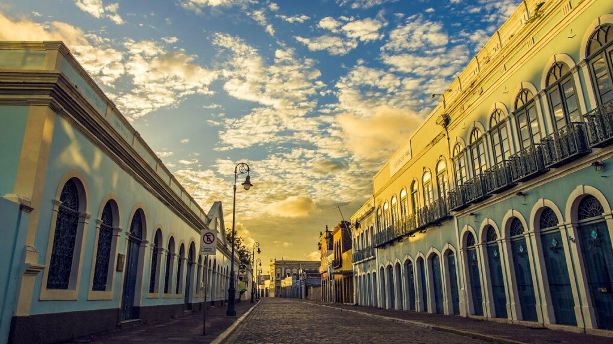
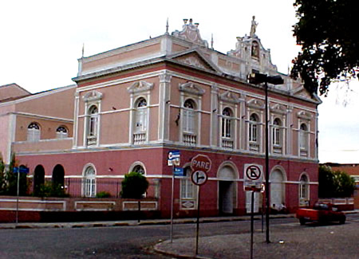

Passeando em Maceió
Jaraguá
O antigo bairro do Jaraguá, onde o porto de mesmo nome , foi onde se deu os primeiros movimentos econômicos da futura Maceió. Os seus trapiches, como eram chamados os embarcadoiros,era por onde o comercio de algodão, charque, exportação do açúcar da província era feito. Até a inauguração do moderno porto de Maceió. era o bairro mais importante da cidade, com vida noturna ativa e exuberante.Veja mais no site Bairros de Maceió
O Teatro Deodoro

O Teatro Deodoro, palco de históricas apresentações de grandes atores brasileiros, como Paulo Autran e outros,de bela fachada art-nouveau,
ainda é centro de principais apresentações de orquestras e apresentações artísticas da cidade.
Localizado na praça de mesmo nome, que ostenta estátua equestre do alagoano
procramador da república, Marechal Deodoro.
Praia de Ponta Verde

A Praia de Ponta Verde é o refúgio da elite alagoana.
Com seu belo Farol, que já é um dos simbolos da cidade, é também
muito requisitada pela juventude surfista e tem como atração o seu
as jangadas dos pescadores, ancoradas junto ao mercado do peixe.